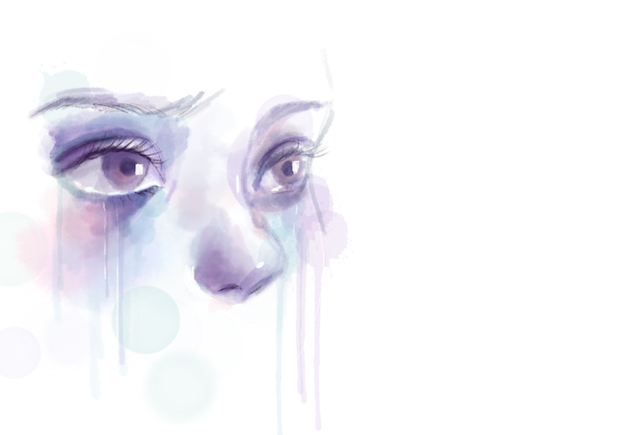

While sitting with the other applicants, she saw the white office where she will be interviewed for her chance to be in Harvard Medical School. Only one of the ten students will be chosen to have that once in a lifetime chance. Hours went by, and the old lady who wore a blue skirt and fitted white sleeves along with round golden edge glasses called her and said,
“Athena Linsangan, you’re next. Please proceed to the office with a wooden maple door.”
Athena immediately ironed down her black skirt, wore her white striped coat, and headed toward the office as she nodded to the lady. Walking past two office doors, she knocked on the door, and Mr Reyes greeted her with a smile and welcomed her to sit down in the soft leather chair. As Athena settled down on the chair, she immediately smelled the arousing coffee beans spreading throughout the office. Her hands started to sweat down as her nervousness could not be controlled. She knew after she walked out through the door, her life could be different.
Mr Reyes sits down on his chair and says, “Hello, Athena! It is nice to see you again! I could never be more pleased with the news I got for you!” The Harvard Medical School chose you to be a scholar after graduating from your pre-medical course here at the University of Cagayan.
With her wide eyes opened and shaking knees, Athena could not express how grateful she was at the time. Mr Reyes continued to explain to her all the detailed information. After half an hour, she shook hands with Mr Reyes and went out of the office without saying a word.
A year went by, and Athena was in Harvard Medical School pursuing her residency as a paediatrician. One morning, she came from her graveyard shift. She got her letter from the door and noticed an unexpected letter that came from her hometown. As she put down her things from the living room, she sat down on her couch and opened the letter.
Opening the letter made her call her sibling Amelia in the Philippines. She asked why she received the letter about their father’s will. Amelia explained that their father passed away a week ago, which she barely noticed because of her seven-day straight shift from the hospital.
After talking to Amelia, she went to take a shower and contemplate how she lived her life. While the water flowed down through the floor, she felt the scars from her shoulders and legs. Shivering from the trauma she suffered, her memories from her father were remembered.
“Papa!” Athena shouted happily, coming home from school. “I excelled again in school, Papa!”
Her father just nodded and said, “You could do more.” With the standard of her father, Athena felt exhausted from pleasing him. While her mother comforted and encouraged her about her achievements. Her mother was where she got her strength and hoped to hide an illness from the whole family.
One day coming home from the university, which was the same day that she received the news about her scholarship at Harvard, she immediately went to her parent’s room where she always found her mother. She found her lying in bed as Athena went to hug her since she thought she was just sleeping. She felt the coldness of her body and found blood from the white linen handkerchief hidden under the pillow next to her mother’s head.
Athena screamed and quickly called Amelia and her father. During her mother's funeral, her father did not show any emotion or grief, which made her hate him more.
With grievances in her heart, she went to Harvard without saying goodbye to his father.
After showering, she went to bed, and Amelia called her in the middle of the night. She answered the phone and said, “Hello? What is happening? Why are you crying? “
Amelia replied, “I just read a letter from Papa’s journal, and he wrote it for you. He wrote down all the things that happened and the reason why you got the scars from your shoulders and legs.”
After calming down Amelia, Athena hung up the phone and tried to go back to sleep, yet the news she got from Amelia broke her heart. She realised that the hatred she has for his father was useless. She found out that her father saved her life from a car accident that made Athena have amnesia about the incident. She was in a coma for three years that her mother almost lost hope of having her back, but his father decided to persist in having hope in Athena because he knew how strong she is yet with a kind heart.
Her father left nothing for his children, any financial inheritance except for the house he gave to Amelia and the journal he gave Athena.
Athena went down to the kitchen and made coffee. She sits beside the window where the sun rises and said to herself,
“All along, I was mad at the wrong person.”